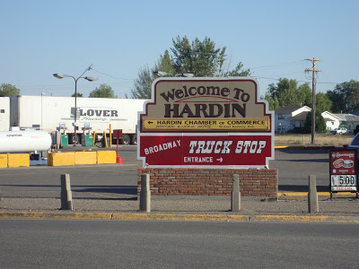
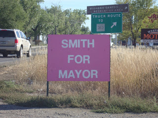
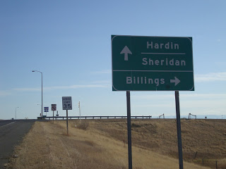

(All Hardin photos by Scott Watson, except where noted.)
A lovely town, a nasty predicament: Thanks to the less-than-visionary "leadership" of its municipal government, the friendly residents of the beautiful town of Hardin, Montana are burdened with $27 million in debt for a huge, empty prison and a business deal with a shadowy mercenary group fronted by a convicted felon.
Hardin, Montana -- In his memoir Against All Hope, former Cuban political prisoner Armando Valladares tells the story of a Cuban ruler who built a huge prison, a structure several times larger than necessary to incarcerate the island's criminal population.
When he was chastised by an adviser for spending a considerable sum on a prison too big to use, the dictator smiled and replied: Don't worry, someday a ruler will come along who will fill it up.
The "someone" predicted by that ruler was Fidel Castro.
Just inside the city limits of Hardin, Montana (pop. 3,500), next to an IGA grocery store and not far from a sugar plant, there sits a huge, empty "jail" -- actually, a small prison -- that cost $27 million to construct. Driven to desperation as its construction bonds went into default, the city government, acting through its economic development arm, the Two Rivers Authority (TRA), offered last March to accept prisoners from the Gitmo detention camp.

Who's going to fill it up? The empty Two Rivers Detention Facility in Hardin, which became a minor tourist attraction last week.
That offer piqued the interest of some yet-unnamed people in California, who chartered a security pseudo-firm calling itself the American Police Force (APF).
The figurehead of that ersatz mercenary outfit is a diminutive Montenegrin Serb known by several aliases, most recently "Captain" Michael Hilton.
Although he originally claimed to have extensive military experience in Iraq and Afghanistan, "Captain" Hilton -- a convicted felon and veteran scam artist -- eventually admitted that he had no military experience; this means he's a "captain" in roughly the same sense that Captain Crunch is worthy of the honorific.
Last summer Hardin's TRA reportedly entered into an agreement with APF to operate the jail for a fee of $2.6 million annually. TRA also promised to spend even larger sums to expand the detention center; they also announced plans to build an international training center for law enforcement and military personnel, as well as to construct housing for the personnel who would soon supposedly besiege the economically depressed town. The company also promised to provide a bounty of other civic assets, including a homeless shelter -- despite the fact that Hardin is a small town with no homeless population.
While discussions over management of the jail (more aptly called a prison) were going on, a second and possibly related process was nearing its conclusion.
Two views of "Captain" Hilton: Here he poses as head of the APF...

(Billings Gazette photo)
Since 1976, Hardin has had a contract with the Big Horn County Sheriff's Office (which is headquartered in the town) to provide law enforcement coverage.
In recent years, the sheriff's office has complained that the city government wasn't providing sufficient resources to provide services for Hardin while simultaneously covering a very large territory.
Accordingly, the city and sheriff's office have been negotiating a "deconsolidation" agreement, under which the contract with the sheriff's office would be terminated, and Hardin would provide its own police force.
... and here's the "Captain" in a 2003 booking photo taken by the Huntington Beach Police Department.

(Via the Billings Gazette.)
Just as the "deconsolidation" negotiations were nearly finished, "Captain" Hilton and another APF personality styling himself "Sergeant" Martin came rolling into town in two black Mercedes SUVs sporting magnetic decals advertising themselves as the "City of Hardin Police Department."
This naturally led to speculation, both locally and -- via the internet -- nationally and beyond, that the APF, a mercenary outfit led by an odd little man with a thick Slavic accent, was taking over law enforcement in Hardin.
In an interview with Pro Libertate, Big Horn County Undersheriff Rondell Davis -- a candid and thoroughly professional young man who arrived in Hardin about a year and a half ago -- pointed out that the APF had violated both the Montana State Code and state constitution by depicting themselves as Hardin's new police force.
Davis described the convergence of APF's arrival and the soon-to-be-completed deconsolidation talks as a "coincidence." "If Hardin wants to set up its own police force, and can find the resources to fund it," he said, "that's fine." The APF, however, obviously wasn't suitable for the job.
"If this outfit had been legitimate, the first thing they did when they came to town would have been to have a town meeting to introduce themselves, explain who they were and what they were going to do, and take questions," Davis observed. Instead, the group -- which, as far as anybody knows, includes only "Captain" Hilton and "Sergeant" Martin -- emitted a dense fog of extravagant promises while being cryptic and disingenuous in dealing with questions about its parent company, activities, personnel, assets, and qualifications, if any.
Interestingly, Undersheriff Davis described Hardin as a town with little-to-no violent crime. The most persistent problem, he pointed out, was dealing with people who have a bit too much to drink -- an assessment validated by a quick glance at the arrest reports published in the town's weekly newspaper, the Big Horn County News.

A welcome Throwback: He's a young man, but Big Horn County Undersheriff Rondell Davis is a candid, personable, low-key peace officer of the Old School. On the desk in front of him, incidentally, could be found materials provided to him by the Oath Keepers.
When he spoke with Pro Libertate, Davis was preparing for a Friday night during which he would provide backup for the single deputy assigned to patrol the entire county.
During a long walk late that evening in which I explored the length and breadth of the town, I saw nothing to indicate that there was a crime problem of any kind in Hardin.
The only sign of potential trouble I encountered was a small knot of visibly drunken young people -- several Indian youth from the local Crow Reservation in the company of a few local non-Indians -- outside a local convenience store. The "ringleader" of the group, a tall kid who appeared to be about 22 years old, reacted to the arrival of a stranger by offering me a friendly fist-bump.
What's up with this? Your correspondent at the entrance of the much-discussed Two Rivers Detention Facility.

During that nocturnal excursion, as well as a second one undertaken the following morning, I also failed to find any evidence that Hardin was being turned into a garrison state.
Contrary to reports given wide cyber-circulation, there was no portcullis being constructed at either end of the town.
Armed commandos said to be patrolling the streets failed to materialize. Nor was there any indication that people were being disarmed by foreign troops, or rounded up for incarceration and compelled injections of the legitimately dreadful H1N1 vaccine. As was the case with many others, the situation in Hardin came to my attention by way of an anonymous e-mail account that portrayed the town as an open-air prison quite similar to the totalitarian community described in Out of the Gray Zone, the terrific recent novel written by the estimable team of Claire Wolfe and Aaron Zelman.
My reaction, which I shared with those who listen to my weekday radio broadcast, was to suggest that there might be a nucleus of disturbing truth inside the accretions of alarmist speculation and apocalyptic embellishment. That much is certainly true, as I'll discuss anon.
I want to emphasize that some of the speculation was, up to a point, entirely justified, given the grandiose claims made by the APF and the clinically demented credulity of the Hardin municipal government:
Where did people get the idea that the group calling itself the "American Police Force" was going to be patrolling the mean street(s) of Hardin?
This idea came directly from the mouth of "Captain" Hilton himself.
As quoted in the September 17 Big Horn County News, Hilton (we'll use that surname for the sake of convenience) boasted of his group's purported manpower, assets, and experience in providing security for cruise ships, airliners, and convoys in Iraq and Afghanistan.
Hilton then asserted that the group could draw on the services of "contractors" from around the world to provide Hardin with a security force. "Hardin will be the safest place in the United States to live, and in six months the best place to live," Hilton insisted.
If I may be forgiven for employing the cliche, Hilton was carrying coals to Newcastle: Hardin already is an exceptionally safe place to live, in large measure because that town, like most others in Montana, is populated by people who own and know how to use firearms.
Of particular interest in this connection is the fact that Hilton's proposal to use APF as a city police force was repeated at face value, and with considerable enthusiasm, by Jim Eshleman, a reporter and photographer for the Big Horn County News, in a September 24 column assailing APF's local critics and defending the organization's compulsive secrecy.
"Having spoken with a representative from the American Police Force I was told on a number of occasions that Hardin will be the safest town in the United States and in six months will be the best place to live in the United States," regurgitated Eshleman.
Besides, who could complain about turning over control of the town to a secretive, unaccountable paramilitary group as long as their checks clear?
"As far as I'm concerned, if a little secrecy means good, high-paying jobs and an economic boost to the city, then I say go for it," insisted Eshleman. "There is no reason to do anything that might put the project into jeopardy.... [I]n spite of the secrecy, it's in the best interests of the community that we partner with the American Police Force and work together for the economic good of not only Hardin, but of Big Horn County and the Crow Reservation."

Charming.
If Hardin were faced with the prospect of conquest by a sentient race of alien space ants, Eshleman would likely publish a column welcoming the town's new insect overlords and reminding them that, as a trusted local media personality, he could be helpful in rounding up others to toil in their underground sugar caves.
Given that Hilton's claim was given wide circulation, and prominently endorsed by a local representative of the "respectable" media, it isn't surprising that rumors began to proliferate that Hardin was either preparing to give APF the run of the town, or that APF had already dispatched battle-hardened paramilitary operators to police the streets.
How did the notion arise that the APF had brought foreign troops to Hardin?
Again, the fons et origo of this rumor was none other than the illustrious "Captain" Hilton.
"APF is going to be bringing in high-level military and police to train," claimed Hilton, as reported in the September 24 Big Horn County News. "Twenty-five percent from America and seventy-five percent international top military leaders from around the world."
Also noteworthy was Hilton's bogus boast that APF had been "running international detention facilities since it was incorporated in 1984." This statement, though entirely false, probably contributed to speculation about foreign prison guards being imported to staff the Two Rivers Detention Facility. And that speculation was fortified by Hilton's claim that the cost of maintaining the military/police training facility would be paid either by "the international community ... or the U.S. government."
How on earth did people come to the conclusion that Hardin residents would be rounded up and compelled to undergo flu vaccinations?
An October 1 Associated Press report quoted Hilton as promising to "dispatch security to patrol Hardin's streets" and also that he had offered "free health care to city residents out of the jail's clinic." This seems to be the acorn that grew into a mighty oak of misinformation regarding round-ups of recalcitrant residents for compelled injections.
It's worth remembering that all of these claims were made at a time when the Hardin city government was talking about creating its own police force -- and the APF rolled into town advertising itself as the "City of Hardin Police Department." Add a large dose of impenetrable secrecy, stir lightly, and the result is a casserole of rumors and innuendo lightly seasoned with fact.
The Hardin city government fled the scene once media attention was focused on its deal with the Goniff Michael Hilton. When Pro Libertate visited Hardin municipal offices on October 2, we were told by a very nice woman working as a cashier at the utilities office that the City Council were in "meetings." If those meetings took place, they occurred somewhere other than City Hall, which was locked down tight at 3:28 PM on a Friday afternoon.


Mayor Ron Adams was nowhere to be found. Greg Smith, executive director of the TRA, and his wife, mayoral candidate Kerri Smith, had likewise disappeared.
"Captain" Hilton headed back to California on October 1, promising to return a few days later to preside over a "job fair."
Becky Shay, the former Billings Gazette reporter hired as a spokesperson for APF, likewise left town. The only people connected in any way to the APF or the prison with whom I was able to speak were two people hired to clean the facility. When I spoke with them just outside the prison's front gate they seemed eager to be finished with the job and anxious regarding the question of whether their check would clear.
During a press conference in Billings, after deflecting several questions and making the robustly implausible claim that APF "welcomed" a fraud investigation by the Montana Attorney General, Shay broke down in tears claiming that she feared that her life was imperiled -- not by the felon running the fraudulent company she was hired to front, but by that company's critics.
On Saturday morning (October 3), the Gazette reported that Allied Defense Systems, an authentic military contractor that had supposedly agreed to provide uniforms for APF prison guards, announced that it had sent a letter to Hilton threatening a lawsuit over the use of the company's name.


Maziar Mafi, the Santa Ana attorney who acted as "legal affairs director" for APF, was suspending his involvement with the group. This he did despite the fact that Michael Hilton generously conferred on Mafi the rank of "captain" in the APF, which appears to consist entirely of two "captains" and a "sergeant."
Mafi's sudden disenchantment with the group may have something to do with the fact that APF had missed the first payment on the black SUVs it had used to make its grand entrance into Hardin. Mafi was the one who had co-signed the loan to buy the vehicles. Becky Shay, who has already suffered a great deal in exchange for a promised $60,000 annual salary, an APF-provided black Mercedes SUV, and a new, APF-provided home, most likely will receive a visit from a repo man in the near future.
With Hilton's scam falling apart as quickly as a Ritz cracker in hydrogen peroxide, it's likely that Hardin's taxpayers will end up being fed some substantial portion of the $27 million in rotten bonds issued to pay for the construction of the Two Rivers prison. But somebody will end up owning that huge, empty prison.
This brings me to a couple of important questions that have yet to be answered. First, who provided the money behind Hilton's little con game? Second, what was Hilton or his sponsor going to get out of conning the Hardin city government?
The point of a con, of course, is to get something, rather than to give something. Hilton promised a great deal, but unless he received as-yet undisclosed cash payments or other blandishments from the TRA, it's difficult to see how he would profit from his deception. This wouldn't be the case, however, if he was working on behalf of somebody with an interest other than financial enrichment.
There remains a possibility that somebody acting with malign intentions wanted to acquire that prison -- and it's also possible that the same individual or group could run a more competent version of this scam in some other economically depressed town that turns to incarceration as a new source of revenue.
"We're just a big joke," complained a sad-eyed but sweet middle-aged waitress the morning of our departure from Hardin. No, it's your municipal government that's made itself look ludicrous, I insisted.
The chief unanswered question is this: If the APF affair is a joke, then what's the punchline? Who is going to fill up Hardin's empty prison?
For additional coverage of the Hardin controversy, go here for my first radio program on the subject, and here for my live report from Hardin. And watch for a video report that will be available soon.
___
(My sincere thanks to my good friend Scott Watson for his invaluable help on this story.)

Be sure to tune in weekdays from 6:00-7:00 Mountain Time for Pro Libertate Radio on the Liberty News Radio Network.
Dum spiro, pugno!
40 comments:
very informative and to answer one of your questions,I believe the oppurtunity to train foreign troops at such a facility is the purpose and precedent. here you can find some more details behind Mr Dokovich http://americanprivatepoliceforce.blogspot.com/
The part about "some other economically depressed town that turns to incarceration as a new source of revenue" reminded me of another Simpson episode.
The school, needing revenue, decided to turn one half of every classroom into a prison, alongside the students.
http://en.wikipedia.org/wiki/The_PTA_Disbands#Plot
Marvelous review, of course, Will. My best, twisted use of Occam's Razor has me thinking Hilton himself was setup, prompted by someone who knew his proclivities. After all this activity and attention, a new, higher level of desperation in Hardin over the prison will make them easy prey for something perhaps more "legitimate," but also more sinister. But then, I am told my fiction makes better reading than my attempts at speculation.
Well, I must admit I'm astonished.
I've probably read almost all the stories about the Hardin jail since it was first proposed back in June, 2004. Until the boneheads from Hardin decided to solicit Guantanamo detainees, that had not yet become a formidable task.
That theatrical nonsense, plus the desperation that derived from it, drove the mouth breathers who constitute Hardin's officialdom into signing a contract with a lifelong grifter. Their stupidity has guaranteed Hardin a place in infamy.
Meanwhile, the right wing blogosphere has come alive with hysterical ravings about black helicopters, FEMA concentration camps, forced vaccinations and
mass confiscations of firearms.
Overlapping the wingers, deduced from a review of the blog feedback on the subject, are substantial fringe groups comprised of those who describe themselves, somehow, as "Christians," despite their homophobia, racism and intolerance of the beliefs of others. They do expect to be carried off in the Raputure, however.
So who writes perhaps the best article, however brief, and certainly the funniest piece that has ever appeared on the subject of Hardin and its boneheaded jail project, but a conservative Christian.
Who would have guessed?
Hat's off to you, Mister Grigg!
hmm, you don't say? now i have to try that. will stale ritz crackers do?
okay, nature abhors a vacuum. some damage is done, but the muni can always sell the whole facility and the land it's on during a period of high demand for prisons/jails. hands washed clean.
quite frankly, with the dollar going the way of the dodo, it's safer to hold your wealth in almost anything, i should say. just so long as, in cases such as this, the petty tyrants among the townsfolk don't go and think they ought to make the intended use of it.
This whole mess was brought on the citizens by bottom feeders, parasites who have abused the power they have and have LE backing them with deadly force.
Its very simple to understand where our country has gone wrong. When a productive citizen needs to go to parasites who produce nothing, to get permission to do productive work, it can only go down hill from there.
This matter in Hardin is only a spin off of a bankrupted government that is rotten to the core from the top to the bottom. One day in hindsight this Hardin matter will not be on the radar screen because things are going to get far worse in very large degrees. These people that refuse to do product work feeding off of those that do. Well kill people by the millions to keep from having to do real work. You an't seen nothing yet.
The punchline, sadly, is that no matter which way this goes, a town of 3,000 is going to be burdened with almost 30 million in debt. Passing it off to Montenegrin Mike was the second attempt to make it someone else's problem, and it seems like the bank is getting nervous.
This train wreck of a civic project is an allegory for the sort of corporatism practiced in cities and towns across the nation, where tax revenue is burned in sacrifice to the Gods of Economic Planning; a vain attempt to circumvent the universal, immutable laws of economics; expecting enormous profit hidden beneath an enormous pile of debt, an untenable business plan predicted to be successful based solely on faith.
Mr. Grigg, your considerable skills remain on fine display. You show absolutely no sign of any of your recent hardships, and I for one am very thankful that you are back at it. Your work matters, to people you may never meet. Please stay safe and healthy and keep the goad in play!
As it happens I have family both in Bozeman and Billings, and have been watching this scenario with interest. From the beginning, anyone could tell that something stinky was happening, but I'm happy to have reserved judgment until things clarified up a bit--which they now seem to have done.
And the best part about that news is that it frees us up to pay better attention to the question you raise at the end of this post--this scam fell apart awful fast, so cui bono? On one hand, the scam seems almost too amateurish for a practiced con artist, but on the other hand, it seems pretty stupid as a "testing of the waters" for someone else, insofar as everyone will now have their hackles up for something similar.
If nothing else, the homecoming of the city government and its flacks should prove to be real interesting, shouldn't it?
Powder dry, reset to condition yellow.
TJP,
you were circling over the prey but you let it get away and hide. the true question is what will the people of hardin do, or rather its govt do, to pay off the debt?
somebody will come along and make an offer so good they cannot refuse. the next thing you know the residents are living on foreign soil.
hardin, IMO, is but a microcosm of america at large. reminds me of the rumor that hillary went to china to make "us" collateral for any US debt. stuff like that is too crazy to make up.
so, again, will the people of hardin sell their souls to get rid of the debt? another reason to hate the state.
rick
Why hasn't anyone looked into why a "Port Authority" (TRA) - with special government privliges is operating in Hardin??
Mr.Grigg,
Strikes me there are two questions needing answers, on which you might give us an update if you can find them out:
(1) This jail began construction long before APF showed up. Who persuaded the TRA to issue $24 million in bonds to build it, and how did they manage to persuade them? Was there a preliminary business plan in existence, which should include a market study, operational plan including staffing levels, cost analysis and 5-year budget, and if so who produced the plan? Was the TRA so stupid as to spend $24 million in a town of 3,000 souls just on a whim? Hard to believe anyone could be so dumb. Did anyone in the town attend the public meetings (if there were any) when this proposal was discussed 3-4 years ago? So - first question is how and why the jail got built.
(2) When the jail failed to attract a governmental customer or a single prisoner, and the TWA became desperate, (we assume,) why did the APF clowns just then coincidentally roll into town offering to turn it into a profitable enterprise? Was someone perhaps backing the APF and hoping to get control of a prison? Maybe the same person who persuaded Hardin to build it in the first place? Consider this: A privately run prison in the far boondocks of a sparsely populated state would be an excellent place for a corporation or powerful group to "disappear" select enemies whom one was not prepared to simply murder, or whom one wanted to interrogate first and THEN murder. After all, the Bush administration was snatching people off the streets all over the world and spiriting them away on private unmarked planes to secret prisons in cooperative fascist countries to be tortured, often to death - all without any legal authority of any kind. So, second question - who is APF fronting for?
Actually, there is a third question, but this is probably not one you or I can answer: Have the city council members of Hardin recently come into unexpected and unexplained financial windfalls?
As you astutely observe, the scam artist "Captain Hilton" must have been expecting SOME sort of gain or payoff in posing APF as a competent private paramilitary organization and running this scam to take over the jail and then police the town. But from whom did he expect that payoff?
That is what I find most intriguing.
Lemuel Gulliver.
Just read an article about Serbia threatening a lawsuit if APF doesn't change it's logo. Don't all 50 states have strong laws for impersonating a police officer? I'll try and track that Serbia article down. Info overload? Never! Now is the time to be alert, aware, awake.
Paul Joseph Watson
Prison Planet.com
Monday, October 5, 2009
Following threats of legal action on behalf of the government of Serbia against APF for using a near copy of the Serbian Coat of Arms, on Sunday the logo was changed although it still remains a double-headed eagle, which is widely accepted as signifying imperial power, not something many would be comfortable with for an organization that wants to provide law enforcement.
In addition, the company has changed its name from American Police Force to American Private Police Force.
The organization has also changed the language on its website and altered the claim that it runs the U.S. Training Center, which is actually controlled by Blackwater.
The previous statement on this page read, “Our extensive tactical firearms training facility, the U.S. Training Center is capable of providing a wide range of instruction and training for all types of law enforcement organizations,” a passage that was lifted directly from the Blackwater or “Xe” website.
Following rumors of threats from Blackwater, the page now reads, “Our extensive tactical firearms training facility (ETA Spring 2010) will be capable of providing a wide range of instruction and training for all types of law enforcement organizations.”
Why APF originally claimed that they already had a training center, whereas now they say it won’t even be ready until 2010, is just another one of the bizarre mysteries surrounding the organization.
“The group’s leader, Capt. Michael Hilton said the crest was a family emblem and he used it to honor his grandfather. APF Spokeswoman Becky Shay said she is not aware of any lawsuit from the consulate and Hilton made the change as, “the quickest thing he could to diffuse tension” with the old logo. She would not elaborate on exactly what those tensions were,” reports KURL 8 News.
There has been a noticeable effort on behalf of APF over the last few days to portray themselves as victims of a media harassment campaign, particularly heaping blame on Alex Jones and his crew for being persistent in demanding answers from the organization. The people of Hardin need to understand that the last people to wake up to being scammed are those who have been targeted by the scam, known as the “mark”. In this case, the media is their friend, not their enemy and people in the town need to come to this realization before it’s too late.
This attempt to shift the emphasis of the story has also served to distract from the core issue behind the whole saga – that Hardin is close to turning over a $27 million dollar detention camp as well as responsibility for policing the town, to a career criminal and a convicted fraudster who Wyoming authorities still have an arrest warrant out for. This fact alone should torpedo the whole deal and ensure APF never realize their agenda to implement similar schemes in dozens more towns and cities across America.
Two Rivers Authority board members will meet today to discuss the contract with APPF to man the $27 million dollar detention facility in Hardin. The meeting will take place at the Hardin City Hall from 3pm and is open to the public.
Thank you for one of the best articles Iv'e seen on this.
I'm pretty convinced that one of the deliberate goals of the APPF and some in the TRA, was to sneakily install the APPF as Hardins police department.
Becky Shay says so in her own Gazette news article:
" Hilton said APF has proposed that, if Hardin creates a police department, the company [APPF themselves!] would provide the initial officers and hire a local chief of police [!!]. APF has already purchased Mercedes vehicles that are being outfitted and will be available for patrol cars, Hilton said. [!!!] The training center also could provide some officers [!!!] to support the city, he said. Hilton said that during a trip to Hardin to check out the jail facility, he was shocked to see people selling and using drugs, so he wants to have two narcotics agents [!!!] in Hardin, too. After Tuesday's council meeting, resident Virginia Pitsche said she welcomes anyone who can help clean up Hardin. "
http://www.billingsgazette.com/news/state-and-regional/montana/article_babd814e-a591-11de-8891-001cc4c002e0.html
Mr. Grigg,
Thank you for an excellent article. Your careful structuring of key events and developments renders one of the most valid coverages I've seen.
Oath Keepers did indeed precede your visit to Hardin, which explains the Oath Keepers brochures and DVD on the Under-Sheriff's desk. We have also gained some background on Sheriff Big Hair, from his school years, and Oath Keepers is pleased that both gentlemen are honorable law enforcement officers and good Montanans. The Big Horn County Sheriff's office is operated by solid American gentlemen, and is in no way, to our knowledge here, involved in the knee-jerk decision-making which characterizes the desperadoes at the TRA.
As a personal friend of Claire Wolfe, I was pleased that you mentioned her and Aaron Zelman's book, "Out Of The Grey Zone". They also collaborated on a film, "Innocents Betrayed", and a previous book, "The State vs The People: The Rise of The American Police State" - excellent reading which is tangentially relevant to the Hardin fiasco.
I would like to know if you have a "public" email address to share with me, one which you actively check regularly, that I might contact you. I am the Montana director for Oath Keepers and am about to bring out the inaugural issue of a newspaper named The Montana Messenger (eta by end of October/early November, 2009). I'd like to discuss permissions to re-publish portions of your article in hard copy.
PS: I've been a grateful fan of your work for several years. Have some video footage of yourself here in my home, and have always felt a liberty-movement kinship with you. Thanks for all you do.
Sincerely,
Elias Alias
http://www.oathkeepers.org
“Following threats of legal action on behalf of the government of Serbia against APF for using a near copy of the Serbian Coat of Arms......[t]he group’s leader, Capt. Michael Hilton said the crest was a family emblem and he used it to honor his grandfather."
***********************************
Ah yes, the grandfather - I remember him well, the old man - Grand Duke Alexander Esterhazy of Montenegro, twenty-ninth Baron Rostropovitch of Bratislava and cousin to the last Emperor of Austria. (Suuure.) One of the oldest and most illustrious families west of the Caucasus Mountains. Richer than Satan. Fifty thousand acres of land. Magnificent castle - more spendid even that that of Vlad Dracula. However the accusation about those little girls was never proven, you know, even if the judge did suffer that horrendous accident, and the jury foreman retired to Tahiti.
I'm surprised His Celestial Magnificence the Grand Duke Michael would disguise himself with such a common pseudonym as "Hilton." He must be an uncommonly modest man.
(Or, mayhap it is in honor of the delectable Paris Hilton? You know, the case of the little girls and all that....??)
Okay, I admit His Serene Dignity Baron Michael "Hilton" has more pizzazz than Bernie Madoff, even if old Bernie was about a thousand times more successful at robbing widows and orphans.
This whole circus would be hysterically funny, if it wasn't for all the poor peasants of Hardin who will have to pay back that $27 million.
Thank you, for a perfectly measured report from the trenches.
Our entire county has less than 4500 people. The county seat has less than 3500 population. I can imagine the same sort of hustle perpetrated on the taxpayers of this farming community. The town & county 'officials' are easily flattered and influenced by relatives, friends, and, of late, the compulsively energetic wife of a Brazilian doctor working at the local medical clinic.
She has had herself elected as City Alderman, opened an exercise emporium right next door to her restaurant, and set the 'city' cop on every property in town which looks like it could be the refuge of rats due to its unmown lawn or untrimmed shrubbery. Notices are sent to such property owners with threat of fines and $100 per hour cutting & trimming rates should the 'city' be compelled to do the job for you.
Is small town corruption worse than big town corruption? It seems more offensive to me. Maybe it's because this 'pathological credulity' and glitter awe arises from a generation whose parents knew how to make an honest living and understood how to do without what they did not NEED.
Thank God, literally, for our County Sheriff who is a truly good man. I'm not sure how we managed to be so blessed.
The inbred global elite pondscum should know better than to try these things in the age of the internet. Bloggers can get stories out hours before the corporate presstitutes and days before the birdgcage lining printed press.
Support your local sheriff. They usually live in your community and care about the quality of life in that area. If you ever see a nationalized police force you will know the gig is up that its Zimbabwe, Argentina, Brazil time.
For the record, Kansan, I believe Mr. Grigg is a libertarian Christian.
Kansan srote: "Meanwhile, the right wing blogosphere has come alive with hysterical ravings about black helicopters, FEMA concentration camps, forced vaccinations and
mass confiscations of firearms."
Interesting you don't see many folks who openly deride the 'black helicopters' since it is widely known that there are plenty of very real Blackwater helicopters.
Merc's know no boundaries, the money is the same color whether it comes from a RepubliRat or a DemoRat. Same coin . . . two heads . . .
Sic Semper Tyrannis
File this under "incredible but true". It's just plain wacky to say the least. Still, as Will and others have stated, who "profits"? By following the money we can get an idea of whats going on but it still boggles the mind that the citizens of Hardin would agree to put themselves so deep into debt for a pie in the sky project like this.
Residents desperate for jobs and living in towns where the leadership is devoid of vision and backbone place their faith in charlatans peddling stupid ideas like this. I grew up in Berlin, NH and the although over 5000 miles from Harding - the theme remains the same. At one time Berlin had a prosperous pulp and paper mill. As time progressed little to no money was put into the mill and the mill kept being passed off to new owners like a game of hot potato. One of the final owners was an Iranian who used the mill to launder money. Although lauded as a savior when he first arrived in town when the gig was up he was vilified. At one time during the crisis the mayor claimed that all would work out particularly since he was in talks with a potential buyer. The potential buyer was ( I kid you not) Enron. With leaders like this it is no wonder these formerly prosperous towns have collapsed. Since that time the mill has closed and Berlin now looks like well, Dresden after the bombings. To fill the economic void a couple of prisons have been built but the harsh economic reality remains - their are few jobs and the place is an economic desert. These regions are ripe victims for the newest snake oil salesman - peddling whatever jobs they may claim to have.
Michelle Malkin hopes the Hardin story will be a teaching moment for Americans: “This is an object lesson in citizen vigilance. If you see something, say something.”
I‘m not sure what she means by that…
ihbf,it means that millions of american made this story hit the main stream by speaking out.writing emails to the president and montana officials.It would appear the public outcry stopped a would be paramilitary group from sneaking in the back door of America.
Since that time the mill has closed and Berlin now looks like well, Dresden after the bombings. To fill the economic void a couple of prisons have been built but the harsh economic reality remains - their are few jobs and the place is an economic desert. These regions are ripe victims for the newest snake oil salesman - peddling whatever jobs they may claim to have.
Sadly, this destructive scenario is being repeated in localities of varying sizes and populations throughout the country. In Berlin, NH's case, it's highly likely that some enterprising entrepreneur with sufficient capital could have purchased the mill in question and made something productive and profitable of it if left to his or her own devices. The problem, however, is that there is no such thing as "free enterprise" in Amerika anymore, due in no small measure to the fact that one cannot even open up so much as a sidewalk lemonade stand anywhere in this country without dealing with an onslaught of intrusive, counterproductive, unnecessary, and, last but not least, unconstitutional regulations from some level of government, all of which serve to choke the economic life out of any potentially viable entrepreneurial effort. Add to this the moral hazard created by taxpayer-subsidized favoritism conferred upon preferred classes of hucksters and criminals by said same government, and you have dozens situations like Hardin and your own example of Berlin. The Hardin example is just one of the more egregious, although it will certainly not be the last, as the Amerikan Empire descends into economic chaos, its economic lifeblood drained.
Super investigative reporting, Will. Are you still plannin' to release some sort of video expose too? Just curious.
ihbf, don't pay too much mind to folk like Malkin and her ilk because since they desire to play in the MSM booby circus sandbox, yet not get sand tossed in their (pretty) faces, their reports, naturally, tend to be complimentary of MSM reports (albeit the "conservative" faction). IOW, just like the MSM they themselves grovel (Fox News, in her case), they simply regurgitate the same, tired sputum, i.e. quote another MSM source without further in-depth and, most importantly, incisive investigation on their own.
You'll get MUCH better, poignant (and incisive) info right here at Pro Libertate.
Mr Grigg, you are an excellent columnist, one of the best I've read in a long time. I only wish we could get you published in the Chicago Sun Times, where you could reach a wide swath of the population who need their eyes opened and minds freed. I recently read that you had joined facebook. I was an active supporter of Ron Paul and the freedom movement on that site, and just recently they decided to deactivate my account. No reason was given, and I hav not been able to re-activate it. Please take 3 minutes to watch this informational video regarding the powers behind facebook. http://www.youtube.com/watch?v=h2Un74P0Ym0
In Liberty.
qb
You Didn't Know There Was An Office of Civilian Police and Rule of Law Programs?
http://www.dailypaul.com/node/109826
DD, I like to read Michelle sometimes because she is the perfect conservative in that conservatives are the meanest, most vicious race of people that ever walked the earth. Can anybody, after eight years of war, be so eager to start a new one and can’t really say why? Who else but conservatives could have the same passion for a fake war eight years into it that they had on the day it started? And who else but a conservative still believes in and is not embarrassed to talk about the “ongoing Jihadi threat?”
What’s WRONG with them?
And beside, I love it when Michelle gets all self-righteous, and threatens the government: “You ignored the warning we gave you this summer about the amnesty bill. For your sake, don’t ignore this one.”
Yikes. I meant neocons, not necessarily conservatives.
"I grew up in Berlin, NH and the although over 5000 miles from Harding - the theme remains the same."
Harrisville, NH has been a woolen milltown since the late 1700's. The folks in that community seem to have had vision. I bought a loom made there in 2002 which is as fine a piece of workmanship and durability as you would ever hope to find.
I'm sure other small communities could develop products unique to their regions and expertise. It does require 'vision' as someone mentioned and the ability to work together cooperatively.
http://www.harrisvillenh.org/
OT, but perhaps a roar from the past with some firebrand commentary is in order. I've always admired the effrontery of this woman, Devvy Kidd. Here's an archived post from June 5, 2002 that's most assuredly an even more accurate portrayal of today.
The self-"sissification" of America over decades, particularly its men, has wrought this predicament.
Where Have All the Men Gone?
Read it and...(NO! NOT weep!!)...ponder.
Perhaps, it will take a modern-day Jeanne d'Arc to get the menfolk riled up enough? Personally, as I've alluded to in the past, I don't think we as a people collectively have even the modicum of the moral fortitude possessed of our forebears of yore anymore, not even close.
Carry on. Just a minor intermission...
Thought you and the readers might enjoy this, Will.
"Super 8 Police State."
http://www.youtube.com/watch?v=uUOxgSp7jus&feature=player_embedded
Evil satanic jew communists lurk everywhere! Hopefully my keyboard will save us! Obamber is the Satan! Glenn Beck is the towering intellect and Fox news tells the truth! Beware of counterfeit tickets! Alex Jones married a jew! *Gasp*
Apparently Chuck Baldwin hasn't read Will's latest update (assuming that he reads Will at all). His current newsletter presents the Hardin story to his regular readers in an alarmist manner, as if the Balkan-born Harold Hill and his dummy corporation were the second incarnation of Blackwater. I took the liberty of responding to the listserv email by directing Chuck's attention to Will's update, although I doubt it will matter. If the past is any guide, Chuck is averse to acknowledging, let alone responding to, feedback from his readers and it's likely that he won't let a little thing like facts get in the way of advancing his apocalyptic vision of the future.
"Chuck is averse...." - Liberanter
Though he isn't averse to pimping his autographed photo or the "patriot club"
Post by DachsieLady
This article and excerpt may lend a clue and bring us closer to "cui bono."
http://www.kulr8.com/home/related/63901022.html
""He puts packages together and goes around to different areas across the country. He used to only be in Texas, now they are all over the country, using the same routine. What they do is promise all sorts of things. There are millions of dollars in bonds, revenue bonds and then they go into default. They make their money upfront and within a month they are out of there. They're not there to make sure this thing runs," said Guerra.
Parkey was seen touring the Hardin facility last month when Two Rivers Authority was in contract talks to lease the jail to the California-based firm American Private Police Force, or APF. "
I do not know exactly how in this case the possible scamsters could have gotten their money up front and then left town.
I think the impending police state in the USA is very real. I somehow do not think this is totally a money scam. There was some other kind of secret goal in all of this.
Our city council entertains special "deals" from one scamster group after another. They are takers and insiders on some of these deals and the ordinary citizen is left holding the bag in more ways than one.
The Texas "Trans Texas Corridor" scam is simply Hardin times 100.
Hey! Sorry we didn't cross paths when we rolled through MT (my bud Tennyson just messaged me expressing his surprise at that) but thought I'd share a vid we did on Hardin: http://motorhomediaries.com/hardin-montana-prison-blues/
Keep fighting the good fight!
-Pete
Here's a good piece on the "back story" on how Hardin got ripped off by enabling financing for an illegal, unusable, vastly overpriced jail.
The Texas hustlers who did this to the town took millions off the top in fees and commissions, as well as hugely inflated construction costs. This was the consequence of the town allowing what effectively was a "no-bid" contract.
http://tpmmuckraker.talkingpointsmemo.com/2009/10/behind_hardin_jail_fiasco_private_prison_salesmen_prey_on_desperate_towns.php?ref=fpa
Post a Comment